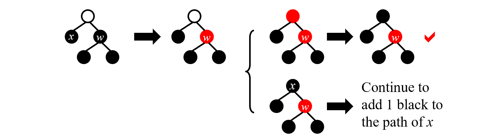

高级数据与算法分析——Part 1
Preparation Before Class
-
教材
数据结构教材
introduction to algorithms
algorithm design
数据结构学习与实验指导
-
评分
作业：10%
Discussion：10%
Research Topic：10%
期中：10%（可被期末覆盖）
期末：40%
AVL Trees
-
目标：加速查找
-
方法：查找树
-
O(height)
-
递增/递减序列退化成链
-
最好情况（树最矮）：所有子树高度相等——太苛刻
-
AVL树定义
-
空树平衡
-
非空树平衡当且仅当
-
左子树与右子树都平衡
-
左右子树高度差小于等于1
-
-
平衡因子BF（node）=左子树高度-右子树高度
- AVL只能取-1，0，1
本课中定义空树高度为-1
几个例子：

这样就得到了性质较好的树
如何得到AVL树
- 树的旋转
 B高度增加1，A高度减少1。复杂度为\(O(1)\)，代码如下
B高度增加1，A高度减少1。复杂度为\(O(1)\)，代码如下
AVL树的插入：
每插入一个新结点，记录（以其为根节点的）高度，从下到上更新父节点高度，计算平衡因子，一但不符合条件
-
因子在同一个方向变化
-2：左旋（RR Rotation——指从失衡节点开始向右插两次的情况）
2： 右旋（LL Rotation，与RR对称）

-
不同方向：把树高高方向的孙子转上来，转两次（两种对称情况，LR和RL）

实际上，根据AVL树的良好定义，在每次插入后只需要一次操作（RR/LR...）就能使其再次平衡。
AVL树的删除：
用删除节点左子树的最大节点/右子树的最小节点替换他（与BST相同），再删除。
从删除节点的父节点开始（替换后），记录（以其为根节点的）高度，从下到上更新父节点高度，计算平衡因子，一但不符合条件，就用insert中的方法调整。在删除操作中，可能会需要多次调整。
复杂度分析
树高的渐进上界
\(n_h\)——h高度的树需要的最小结点数
高度为h的树（所需节点最少）如下

与斐波那契数列类似：
\(F_0=0,F_1=1,F_n=F_{n-1}+F_{n-2}\)
而\(F_n\approx\frac{1}{\sqrt{5}}(\frac{1+\sqrt{5}}{2})^i\)
所以 \(n_h =F_{n+3}-1\)
- \(h=O(lnn)\)
Splay Trees
-
目标：M次操作，总的时间复杂度\(O(MlogN)\)，即每个操作平均复杂度为\(O(logN)\)
-
基本思想：每次查询/插入，将该元素提到根节点
构造过程
-
如果查询节点的父亲是根——旋转查询节点
-
如果不是，则有父亲节点（P）和祖父节点（G）
- zig-zag（z字形）：转两次当前节点
- zig-zig（一个方向）：先转父节点，再转当前节点

删除操作
-
找到要删除的元素X（这样让其在根节点）
-
删掉X，得到左子树和右子树
-
找到左子树最大的节点，将其推到根节点
-
这样就能直接将右子树接到左子树的右边
Amortized Analysis(Three normal methods)
An amortized analysis guarantees the average performance of each operation in the worst case.
-
Splay树的目标：M次操作，总的时间复杂度\(O(MlogN)\)——均摊时间上界(Amortized time bound)
-
worst-case bound >= amortized time bound >= average-case bound
-
前两种与数据分布无关
栈的例子以及方法说明
聚合分析
对于所有 n，n 个运算序列总共需要最坏情况时间（determine an upper bound） T（n）。因此，在最坏的情况下，每次操作的平均成本或摊销成本为 T（n）/n。
以栈为例：
-
push：\(O(1)\)， pop：\(O(1)\)，
-
multipop（一次pop出n个）：\(min\{k，n\}=O(n)\)，其中k是当前栈中元素数
-
所以n次操作上界：\(O(n^2)\)
-
更精确：栈中元素数肯定小于n，push进的元素只能pop一次，所以总的时间复杂度\(O(n)\) $$T_{amortized}= O( n )/n = O(1) $$
核算法
以卖汽水为例：
-
a卖一瓶汽水3元
-
b用5元买汽水，存两元（credits）到a那，下次买汽水可以用。此时actual cost：3元
-
\(amortized\ cost = actual\ cost + credits\)
-
买n瓶汽水，bound： $$ amortized\ cost \geq actual\ cost(即3n元，因为不赊账) $$
注意保证最终信用不小于0
回到栈操作：
-
实际代价：push=1, pop=1, multipop=min(sizeof(s),k)
-
均摊代价：push = 2(提前把pop的代价付掉，即使不pop该元素), pop = multipop = 0，这样所有代价都是常数
-
Credits：push = +1, pop = -1, multipop = -min(sizeof(s),k)
-
multipop时的信用为sizeof(s)，因此不会出现信用为负的情况
-
n次操作最大的amortized cost为2n，\(T_{amortized}= O( n )/n = O(1)\)
势能法
-
\(\Phi(D_i)\)：势能函数，表示\(D_i\)状态的势能
-
\(Credits =\Phi(D_i)-\Phi(D_{i-1})\);
- 当 Credits > 0 时，势能增加，相当于把提前支付的代价存储为势能
- 当 Credits < 0 时，势能减少，相当于把提前支付的代价用掉
-
这样我们就能算出均摊代价(\(\hat{c_i}\) 是均摊代价， \(c_i\) 是实际代价) $$ \hat c_i = c_i+\Phi(D_i)-\Phi(D_{i-1}) $$
-
合法的势能函数：保证\(\Phi(D_{0})\)是最小的，这样总的Credits\(=\Phi(D_n)-\Phi(D_{0})\)>0，使得均摊代价是实际代价的上界。 $$ \sum_{i=1}^n\hat{c_i}=\sum_{i=1}^n(c_i+\Phi(D_i)-\Phi(D_{i-1}))=\sum_{i=1}^nc_i+\Phi(D_n)-\Phi(D_{0}) $$
再次回到栈
-
势能函数\(\Phi(D_i)=D_i\)时刻栈中的元素数
-
计算均摊代价：
-
push：\(\hat{c_i}=c_i+\Phi(D_i)-\Phi(D_{i-1})=1+1=2\)
-
multipop：\(\hat{c_i}=c_i+\Phi(D_i)-\Phi(D_{i-1})=k'-k'=0\)
-
每个操作的代价都是O(1)——均摊代价是O(1)
Spaly树均摊分析
应用：分析splay tree的均摊代价——Amortized Analysis Using Potential Methods:
树的常见势能函数：节点个数、树高···
(因为报告用英文写的所以下面是英文)
In tree's amortized analysis, we often use the height of tree or the amount of nodes as the potential function, which satisfy \(\Phi(0)\) is the minimum. To make the potential function increasing slowly, we choose \(\Phi(T)=log{\sum_{i\in T}S(i)}\), where S(i) is the number of descendants of i (i included). \(\Phi(T)\) is also called rank of T, notion \(R(T)\)
Lemma: If \(a+b\leq c\)
then \(loga+logb\leq 2logc-2\)
Same as the part of algorithm analysis, there are three situations to discuss according to the picture.
-
If the "X" to be pushed is one of the childs of root, we only need one rotation. Except X and P, the "S(i)" didn't change, and the rotation cost \(c_i\) is 1. So the amortized cost $$ \hat{c_i}=1+R_2(X)-R_1(X)+R_2(P)-R_1(P) $$ $$ \leq 1+R_2(X)-R_1(X) $$ (shown below that \(R_2(P)<R_1(P)\))

-
In the zig-zag case, we need two rotation, costing 2. We note that \(R_2(X) = R_1(G) = log(the\ number\ of\ nodes\ in\ T)\). So the amortized cost $$ \hat{c_i}=2+R_2(X)-R_1(X)+R_2(P)-R_1(P)+R_2(G)-R_1(G) $$
$$ =2-R_1(X)+R_2(P)-R_1(P)+R_2(G) $$
$$
\leq 2(R_2(X)-R_1(X))
$$
(shown below that nodes: \(P_2+G_2<X_2,\ so\ according\ to\ lemma,\ R_2(P)+R_2(G)\leq 2R_2(X)+2\))
 * In the zig-zig case, we need two rotation, too, costing 2. We also note that \(R_2(X) = R_1(G)\). So the amortized cost
$$
\hat{c_i}=2+R_2(X)-R_1(X)+R_2(P)-R_1(P)+R_2(G)-R_1(G)
$$
* In the zig-zig case, we need two rotation, too, costing 2. We also note that \(R_2(X) = R_1(G)\). So the amortized cost
$$
\hat{c_i}=2+R_2(X)-R_1(X)+R_2(P)-R_1(P)+R_2(G)-R_1(G)
$$
$$
=2-R_1(X)+R_2(P)-R_1(P)+R_2(G)
$$
$$
=2-2R_1(X)+R_2(P)-R_1(P)+R_2(G)+R_1(X)
$$
$$
\leq 3(R_2(X)-R_1(X))
$$
(shown below that nodes: \(X_1+G_2<X_2,\ so\ according\ to\ lemma,\ R_1(X)+R_2(G)\leq 2R_2(X)+2\))

When splay, the former \(3R_2(X)\) could be eliminated by the latter item's \(-3R_1(X)\). After sum of all the items, we get: $$ \hat{c_i} \leq 1+3(R_2(X)-R_1(X))=O(logN) $$
Incrementing a binary counter
算法导论的摊还分析例子
Incrementing a binary counter(k bit in total)
-
每次从低位往高位翻转bit，遇到1继续翻转，遇到0翻转完后停下来
-
worst case: 每次最多转k个bits——011...1=>100...0
聚合分析：
-
A[0]每次都改变
-
A[1]每两次改变一次
-
假设计数n次，则A[0]改变\(n\)次，A[1]改变\(\lfloor\frac{n}{2}\rfloor\)次...A[i]改变\(\lfloor\frac{n}{2^i}\rfloor\)次
-
因此总共的操作（翻转bit）的次数为
因此总的时间复杂度上界为O(n)，均摊时间复杂度为O(n)/n=O(1).
核算法：
-
实际代价：1变为0 = 1, 0变为1 = 1
-
均摊代价：0变为1 = 2(提前把1变为0的代价付掉), 1变为0 = 0
-
从0开始计数，肯定先将0变为1才能变回去，因此不会出现信用为负的情况
-
我们知道每次最多只有一个0变成1
-
因此均摊代价为O(1)
势能法：
-
选取势能函数：第 i 次操作后 1 的数目，记为 \(b_i\)
-
每次翻转，将低位的连续的 1 翻转为 0 ，遇到的第一个 0 翻转为 1 。将翻转1的数目计为 \(t_i\) ，这样一次操作的实际代价 \(c_i = t_i +1\)
-
分情况讨论 \(b_i\) 和 \(b_{i-1}\) 的关系，这样在 \(\Phi(D_i)-\Phi(D_{i-1})\) 中消去 \(b_i\)
- \(b_i=0\) —— 则第 i 次操作将 k 个 1 全部翻转为 0 ，所以 \(b_{i-1}=k=t_i\)
- \(b_i>0\) —— 用 \(b_{i-1}\) 和 \(t_i\) 计算 \(b_i\) ：\(b_i=b_{i-1}-t_i+1\)
- 因此，\(b_i\leq b_{i-1}-t_i+1\)
-
现在来计算均摊代价 $$ \hat c_i = c_i+\Phi(D_i)-\Phi(D_{i-1}) = t_i +1 + b_i - b_{i-1} $$ $$ \leq t_i +1 + b_{i-1}-t_i+1- b_{i-1} = 2 $$
-
因此每次操作的均摊代价都是 \(O(1)\)
当不从 0 开始计数时，即 \(\Phi({D_0})\ne 0\) 时，虽然无法保证 \(\Phi(D_i)-\Phi(D_{i-1})\geq 0\)，但均摊代价仍是 \(O(1)\)
前面我们知道 $$ \sum_{i=1}^n\hat{c_i}=\sum_{i=1}^n(c_i+\Phi(D_i)-\Phi(D_{i-1}))=\sum_{i=1}^nc_i+\Phi(D_n)-\Phi(D_{0}) $$ 转换一下 $$ \sum_{i=1}^n{c_i}=\sum_{i=1}^n\hat c_i-\Phi(D_n)+\Phi(D_{0})=\sum_{i=1}^n\hat c_i-b_n+b_0 \leq \sum_{i=1}^n\hat c_i-k $$ 也就是说，它们之间相差一个常数 k ，而这对均摊代价是没有影响的，仍是 \(O(1)\)
Red-black Tree
tips: 访问空指针会 Sigementation fault，，可以指向一个虚拟节点（哨兵）
- 目标：每次搜索都\((logn)\)
1. 红黑树定义
-
红黑树的每个节点要么是红色的，要么是黑色的
-
根节点是黑色的
-
每个叶子都是哨兵（NIL），哨兵是黑色的
-
如果节点是红色的，那么他的孩子都是黑色的
-
每个节点到（能到达的）所有叶子的简单路径，经过的黑色节点数相同
- black height: 不算自己、不算哨兵，从自己到叶子经过的黑色节点数
引理：有 N 个内部节点的红黑树的高不超过 2ln(N+1)
证明：
2. 红黑树构造
构造想法：插入新节点且染成红色——保持性质5，通过迭代变换保持其他性质
Insert(不满足性质有三种情况)：
-
case 1：红叔叔（所以爷爷肯定黑色）——将爸爸和叔叔染黑，爷爷染红

-
case 2：近叔叔黑——旋转到case3
-
case 3：远叔叔黑——父亲染黑，旋转爷爷

这样保持了每次只有一条规则被破坏
- 复杂度：最坏情况——一直case 1 $$ T = O(h) = O(logn) $$
Delete
-
被删节点是leaf node: 父亲指向NIL
-
只有一个儿子：用儿子替代他
-
有两个儿子：用左子树最大的/右子树最小的替代他（保持本身的颜色不变，替换值），再递归地删除替换的节点
-
如果删除的节点（x）是红色节点，那么它不会影响红黑树的性质，可以直接删除。删除黑色节点可能会破坏红黑树的性质，因此需要进行修正。删除黑色节点时会有以下几种情况需要考虑：
-
case 1：被删除节点的兄弟节点是红色的，转换成后面的几种情况——先把兄弟节点的红色给父亲，再将兄弟节点旋转上去

-
case 2：被删除节点的兄弟节点是黑色的，且儿子都是黑色的——先令兄弟节点为红色，如果父亲是红色，则直接删除 x，并将父亲改为黑色，就完成了调整；如果父亲是黑色，则把父亲当作新的被删除节点进行调整（只是调整方法，不用删除） 
-
case 3：被删除节点的兄弟节点是黑色的，且近侄子是红色的——将红色给兄弟，再把近侄子转到兄弟的位置（变换成 case 4）

-
case 4：被删除节点的兄弟节点是黑色的，且远侄子是红色的——兄弟与父亲交换颜色，再把兄弟转上来，删除 x
-
具体例子

B+ Tree
1. 定义
A B+ tree of order M:
-
根节点要么没有孩子，要么有\([2,M]\)个孩子
-
除根之外的非叶子节点，有\([\lceil M/2\rceil,M]\)个孩子
2. 插入过程
-
插入=>若超限=>分裂
-
保证有序/找到位置：遍历（O(n)）
-
如果推到前面——可能 O(n)，因此实际操作不这么做
Find 的时间复杂度：O(logN)，不管度数是多少
choose M: best 3 or 4
B+树的好处：相近的元素离得近，磁盘友好
3. 删除过程
-
删除节点=>若低于最低数量限制则：
- 若兄弟有多余节点，则借一个，更新键值
- 若没有，则与兄弟合并，并递归地向上操作，跟新键值